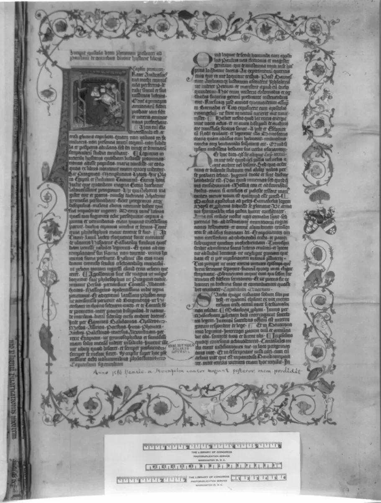
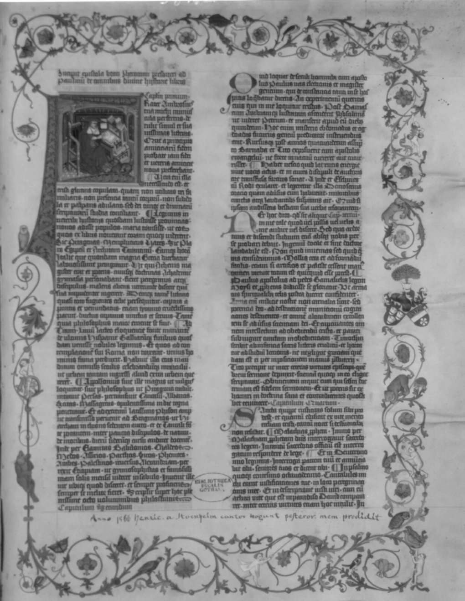

아직 펼치지 않은 카드손으로 그린 말씀 · 3마인츠 거대 성경구텐베르크가 활자로 성경을 찍던 바로 그 무렵, 한 필경사는 손으로 커다란 성경을 쓰고 있었어요. 그는 책 끝에 무엇을 적어 두었을까요?같은 때 한 사람은 기계로 찍고, 한 사람은 손으로 썼대!
1452년 4월 4일 ~ 1453년 7월 9일독일 마인츠 가까이 · 지금은 미국 의회도서관
마인츠 거대 성경
1452년 4월 4일, 독일 마인츠 가까이에서 한 필경사가 거대한 성경을 쓰기 시작해 열다섯 달 만에 마쳤어요. 그 첫 쪽에는 그림과 함께, 이 성경과 이어진 사람들이 남긴 자국이 여럿 있어요. 첫 쪽 사진 속 여섯 곳을 눌러 하나씩 찾아 읽어 보세요.
한 사람이 손으로 열다섯 달 동안 쓴 아주 큰 성경이래. 첫 쪽에 올빼미랑 곰이 숨어 있대. 같이 찾아볼까?
검수 전 시안이에요(기준서 1판). 첫 쪽 사진은 의회도서관이 예전에 찍은 흑백 사진이에요. 장면에는 기록에 있는 것만 옮겼고, 상상은 ‘눈 감고 상상해 보기’에만 썼어요.
시안 확인용카드 단계 미리 보기
1
첫 쪽에 남은 자국
이 성경은 양피지 459장을 두 권으로 묶은 책이에요. 한 장이 세로 56센티미터, 가로 41센티미터쯤 돼요. 필경사는 엷은 갈색 잉크로 줄을 다 그어 두고, 한 쪽에 두 단, 단마다 60줄씩 썼어요(의회도서관).
그는 1452년 4월 4일에 시작해 1453년 7월 9일에 마쳤어요. 일한 날짜를 꼼꼼히 적었고, 책 끝에는 “하늘의 도움으로, 이듬해 7월 9일에 마쳤다”라고 남겼어요. 이름 대신 자기를 ‘칼라무스’, 라틴어로 ‘펜’이라고 불렀어요(의회도서관 블로그 · 우리말은 이 안내서가 옮김).
아래는 이 성경의 첫 쪽이에요. 의회도서관이 예전에 찍은 흑백 사진이에요. 동그라미를 하나씩 눌러 보세요.
흑백 사진 속 첫 쪽이에요. 동그라미를 하나씩 눌러 보세요. 고른 곳은 ‘가까이 보기’로 크게 볼 수 있어요.

『마인츠 거대 성경』 첫째 권 첫 쪽(1452년) · 의회도서관의 옛 흑백 사진 · 자료: 『마인츠 거대 성경』, 미국 의회도서관 · 퍼블릭 도메인 · 위키미디어 공용
그림 위의 숫자나 아래 번호를 눌러 보세요.
여섯 곳을 다 찾았어요. 필경사가 쓴 첫 쪽에, 그 뒤 이 성경이 지나온 길이 함께 적혀 있어요.
그림을 그려 넣은 때, 대성당에 맡긴 때, 다른 도서관으로 간 때가 이 한 쪽에 함께 남았어요. 책의 첫 쪽이, 이 성경이 지나온 길을 적은 쪽이 되었어요.
첫 쪽에 그림이 가득해. 올빼미도, 곰도, 방패도 있어!
물어보기올빼미는 어디 앉아 있을까?
2
500년 뒤의 같은 날
1631년, 30년 전쟁 때 스웨덴 왕 구스타브 2세 아돌프가 마인츠 대성당의 이 성경을 전리품으로 가져갔어요. 왕은 이 성경을 함께 싸우던 작센바이마르 공작 베른하르트에게 주었고, 베른하르트는 1639년에 세상을 떠났어요(의회도서관).
성경은 그 뒤 300년 넘게 공작의 집안에 대대로 내려왔어요. 1951년, 미국의 수집가 레싱 J. 로젠월드가 책방 주인 H. P. 크라우스를 거쳐 이 성경을 샀어요(의회도서관).
사진은 의회도서관 토머스 제퍼슨 빌딩의 그레이트 홀이에요. 이 홀 한가운데에 오랫동안 이 성경과 구텐베르크 성경이 “서로 마주 보며 이야기를 나누듯” 놓여 있었어요. 하나는 손으로 쓴 책의 끝을, 하나는 찍어 낸 책의 시작을 보여 준다고 해요(의회도서관 블로그, 2007 · 우리말은 이 안내서가 옮김).
로젠월드는 이 성경을 1952년 4월 4일에 의회도서관에 선물했어요. 필경사가 처음 펜을 양피지에 댄 날로부터, 꼭 500년 뒤의 같은 날이었어요(의회도서관).
멀리멀리 여행한 성경이야. 전쟁 때 떠나서, 바다 건너 미국까지 갔대.
물어보기선물한 날이 시작한 날이랑 똑같대. 무슨 날이었지?
눈 감고 상상해 보기
1453년 7월 9일, 한여름. 마지막 장의 마지막 줄을 막 다 썼어요. 열다섯 달 동안 쓴 양피지가 곁에 높이 쌓여 있어요. 펜 끝을 다시 잉크에 적셔 끝낸 날을 적어요. 사각사각, 펜이 양피지를 긁는 소리만 들려요.
눈을 감아 봐. 아주 큰 책의 마지막 줄을 다 썼어. 이제 다 쓴 날을 적을 거야. 사각사각, 펜 소리가 들려?
나의 자리
모두가 새 방법으로 넘어갈 때, 나는 어떤 일을 손으로 끝까지 해 보고 싶나요?
손으로 쓴 편지와 컴퓨터로 쓴 편지, 어떤 게 더 좋아?
마음에 닿는 한 줄을 고르거나 직접 써 보세요. 한 줄을 남기면 이 자리의 도장이 찍혀요. 이 기기에만 저장돼요.
더 깊이
궁금한 칸만 펼쳐 읽어도 괜찮아요.
알고 보면
네 사람짜리 필사본 한 권 무게가 16킬로그램쯤이에요. 한 권을 편하게 옮기려면 두 사람이 들어서, 의회도서관 사람들은 두 권짜리 이 성경을 ‘네 사람짜리 필사본’이라고 불러요. 희귀본 열람실에서는 해마다 4월 4일을 ‘거대 성경의 날’로 지내요(의회도서관 블로그, 2025).
표지 안쪽의 노래 조각 첫째 권 표지 안쪽에는 14세기 성가책에서 떼어 낸 양피지 조각이 붙어 있어요. 하루 기도 시간마다 부르는 노래를 담은 책(성무일도서)의 한 장이었고, 음표 모양으로 보아 라인강 둘레에서 썼을 것으로 봐요. 옛 책장은 이렇게 제본에 다시 쓰이곤 했어요(의회도서관 음악 블로그, 2022).
고타의 도장 의회도서관 블로그가 더 읽을거리로 꼽은 글 가운데 하나(C. 호프, 2007)는 오늘날 고타 연구 도서관의 보물들이 1945년에 다른 곳으로 옮겨지고 뒤에 팔린 일을 다뤄요. 첫 쪽 도장에 찍힌 ‘고타’가 그곳이에요.
끝내 마치지 못한 장식 이 성경은 아름다움과 거의 새것 같은 상태, 그리고 다 마치지 못한 그림 장식으로 이름나 있어요(의회도서관 블로그, 2025). 왜 멈췄는지는 알려져 있지 않아요(위키백과 길잡이).
기록마다 다른 점
슈토크하임은 누구였을까 의회도서관 전시는 그를 대성당의 관리인(큐레이터)이라 하고, 이 성경이 처음에 그의 것이었다고 해요. 의회도서관 보도자료(2022)는 대성당의 선창자였다고 해요. 위키백과는 그가 대성당에 기증한 것인지, 대성당 안 다른 곳에서 도서관으로 옮긴 것인지 분명하지 않다고 해요.
칼라무스는 사람일까, 펜일까 2025년 블로그는 필경사가 자기를 ‘칼라무스’(펜)라고 불렀다고 하고, 2022년 음악 블로그는 그가 ‘충실한 펜’(calamus fidelis)으로 썼다고 옮겨요. 어느 쪽도 그의 진짜 이름은 알려 주지 않아요.
쪽의 크기 의회도서관 전시는 22×16인치(약 56×41센티미터)라 하고, 『파인 북스 매거진』(2022)은 세로 23인치라고 해요.
어디서 썼을까 위키백과는 만든 곳을 확실히 알 수 없지만 여러 증거가 마인츠를 가리킨다고 해요. 의회도서관은 2021년의 방패 연구로, 마인츠 가까운 요하니스베르크 수도원을 위해 맞춘 것으로 봐요.
함께 읽는 말씀
직접 가 보기
확인한 날 · 2026년 11월 18일 · 바뀌기 쉬운 정보라 정기적으로 다시 확인해요
미국 워싱턴 D.C. 의회도서관 토머스 제퍼슨 빌딩이에요. 2026년 11월 18일에 본 의회도서관 전시 목록에는 1층의 구텐베르크 성경만 올라 있고, 거대 성경은 나와 있지 않아요. 보러 가려면 미리 확인하세요.
2021년에 모든 쪽을 찍어, 지금은 의회도서관 누리집에서 누구나 넘겨 볼 수 있어요.
첫 쪽의 여섯 자국 금박
첫 쪽 사진 속 여섯 곳을 모두 찾아 읽으면 카드에 금박이 입혀져요.
첫 쪽 사진 속 여섯 곳을 모두 찾아 읽기
아이와 함께 채색
아이와 함께 ‘영화처럼 보기’를 끝까지 보면 카드가 채색돼요.
아이와 함께 ‘영화처럼 보기’를 끝까지 보기
근거 보기 (11)
- 미국 의회도서관 전시: The Giant Bible of Mainz — 양피지 459장·22×16인치, 엷은 갈색 잉크로 그은 줄, 한 쪽 두 단 60줄, 1452년 4월 4일~1453년 7월 9일(15달), 첫째 권 다섯 쪽의 테두리(토끼·사냥꾼·사슴·공주·곰), 테두리 무늬가 마인츠와 잇는 가장 큰 증거, 글씨 모양은 라인강 가운데·아래쪽에 흔함, 슈토크하임(대성당의 큐레이터)·첫 장의 글, 1631년 구스타브 2세 아돌프, 베른하르트(1639년 사망), 1951년까지 공작 집안, 크라우스를 거쳐 로젠월드, 1952년 4월 4일(500년 뒤)
- M. Stell, A Little Note About A Giant Bible(의회도서관 블로그, 2025년 4월 4일) — 칼라무스(펜)라 부른 필경사·1453년 7월 9일, 처음 펜을 댄 날로부터 500년 뒤의 선물, 요하니스베르크 수도원, 2021년 제퍼슨이 밝힌 첫째 권 첫 장의 두 방패(뤼데스하임 · 물통 셋의 나우타), 1566년의 첫 기록, 한 권 35파운드·두 사람·네 사람짜리 필사본, 거대 성경의 날, 2021년 모든 쪽 디지털화, 다 마치지 못한 장식, 더 읽을거리 C. Hopf(2007, 고타 1945), 창세기 첫머리 장식 그림 설명
- 미국 의회도서관 보도자료: The Giant Bible of Mainz Digitized(2022년 9월 29일) — 한 필경사가 날짜를 꼼꼼히 적음, 온라인 자료 주소, 첫 장의 방패(뤼데스하임·나우타), 1566년 대성당의 선창자 슈토크하임이 대성당에 맡김
- R. McNellis, A Fragmented History in the Giant Bible of Mainz(의회도서관 음악 블로그, 2022) — calamus fidelis(충실한 펜), “하늘의 도움으로 이듬해 7월 9일에” 마침, 459장, 첫째 권 표지 안쪽의 14세기 성무일도서 조각(호프나겔 음표, 라인강 둘레)
- 의회도서관 블로그: The Library and ‘The Good Book’(2007) — 그레이트 홀 한가운데에서 두 성경이 서로 마주 보며 이야기를 나누듯, 손으로 쓴 책의 끝과 찍어 낸 책의 시작
- 미국 의회도서관: Exhibitions(2026년 11월 18일 확인) — 1층의 구텐베르크 성경(계속 전시), 거대 성경은 목록에 없음
- Fine Books & Collections: Behold the Giant Mainz Bible!(2022) — 의회도서관 사진 설명 ‘서재의 성 히에로니무스를 그린 머리말’, 459장·세로 23인치·두 권
- 내셔널 갤러리(런던): 빈첸초 카테나, 서재의 성 히에로니무스 — 성경을 그리스어·히브리어에서 라틴어로 옮긴 히에로니무스, 늘 함께하는 사자
- 라틴어 불가타 시편 44편 2절(Bible Study Tools) — lingua mea calamus scribae velociter scribentis
- Wikipedia: Giant Bible of Mainz — 길잡이(맺음말의 두 날짜, 마치지 못한 장식, 슈토크하임이 기증했는지 옮겼는지 분명하지 않음, 만든 곳)
- 대한성서공회 개역개정: 시편 45편 · 창세기 1장
그림·사진·소리 출처
‘처음 만나는 기독교 문화’의 깊은 카드예요. 카드 단계와 남긴 글은 이 기기에만 저장돼요.